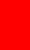
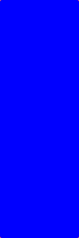

Селекторы CSS
Применение CSS к разным частям HTML
1. Селектор элемента выбирает элементы на основе их тега HTML.
- Селекторы классов выбирают элементы на основе значения атрибута class.
- Селекторы идентификаторов выбирают элементы на основе значения
атрибута id.
- Селекторы атрибутов выбирают элементы на основе их атрибутов и значений.
- Универсальный селектор выбирает все элементы.
Цвета
Изучаем цвета
Красный

Синий

Оранжевый
Коричневый
Тёмно-синий
Заголовок H1 - ff6600
Заголовок H2 - 3366cc